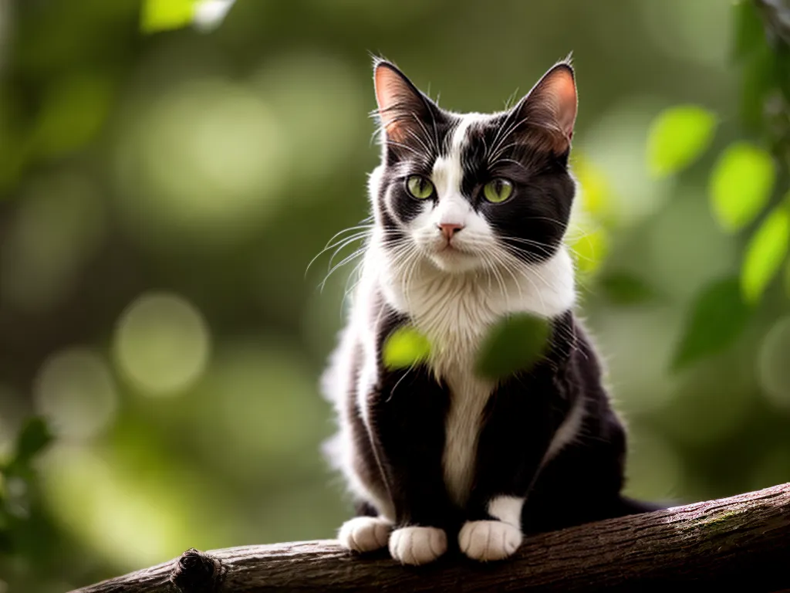

Modelos de Listas em HTML
Lista Não Ordenada (Unordered List)
As Listas Não Ordenadas são usadas para criar listas de itens não
classificados. Os itens são geralmente precedidos por marcadores, como pontos ou
círculos.
- Item 1 - Raça 1: Siamese
- Item 2 - Raça 2: Persa
- Item 3 - Raça 3: Maine Coon
- Item 4 - Raça 4: Bengal
- Item 5 - Raça 5: Ragdoll
- Item 6 - Raça 6: Sphynx
- Item 7 - Raça 7: British Shorthair
- Item 8 - Raça 8: Scottish Fold
- Volte à Página Principal
- 
Voltar ao topo da página
Lista Não Ordenada com Outros Marcadores
Aqui estão as mesmas raças de gatos em uma lista não ordenada com diferentes marcadores:
- Item 1 - Raça 1: Siamese
- Item 2 - Raça 2: Persa
- • Marcador de Bola Pequena
- Item 3 - Raça 3: Maine Coon
- Item 4 - Raça 4: Bengal
- Item 5 - Raça 5: Ragdoll
- ✓ Marcador de Verificação
- Item 6 - Raça 6: Sphynx
- Item 7 - Raça 7: British Shorthair
- Item 8 - Raça 8: Scottish Fold
- Volte à Página Principal
Voltar ao topo da página
Lista Ordenada com Letras (Ordered List with Letters)
As Listas Ordenadas são utilizadas para criar listas de itens
classificados com letras em ordem alfabéticas.
- Item 1 - Raça 1: Siamese
- Item 2 - Raça 2: Persa
- Item 3 - Raça 3: Maine Coon
- Item 4 - Raça 4: Bengal
- Item 5 - Raça 5: Ragdoll
- Item 6 - Raça 6: Sphynx
- Item 7 - Raça 7: British Shorthair
- Item 8 - Raça 8: Scottish Fold
- Volte à Página Principal
Voltar ao topo da página
Lista Ordenada com Números (Ordered List with Numbers)
Aqui estão as mesmas raças de gatos em uma lista ordenada com números:
- 1. Raça 1: Siamese
- 2. Raça 2: Persa
- 3. Raça 3: Maine Coon
- 4. Raça 4: Bengal
- 5. Raça 5: Ragdoll
- 6. Raça 6: Sphynx
- 7. Raça 7: British Shorthair
- 8. Raça 8: Scottish Fold
- Volte à Página Principal
Voltar ao topo da página
Lista de Definição (Definition List)
As Listas de Definição são usadas para criar listas de termos e suas
definições correspondentes. Cada termo (<dt>) é seguido por sua
definição (<dd>).
- Termo 1 - Raça 1: Siamese
- Definição 1
- Termo 2 - Raça 2: Persa
- Definição 2
- Termo 3 - Raça 3: Maine Coon
- Definição 3
- Termo 4 - Raça 4: Bengal
- Definição 4
- Termo 5 - Raça 5: Ragdoll
- Definição 5
- Termo 6 - Raça 6: Sphynx
- Definição 6
- Termo 7 - Raça 7: British Shorthair
- Definição 7
- Termo 8 - Raça 8: Scottish Fold
- Definição 8
- Volte à Página Principal
Voltar ao topo da página
|